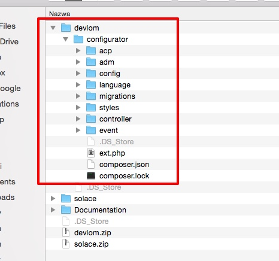
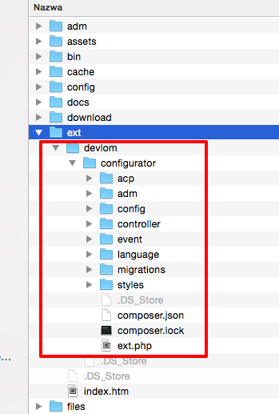
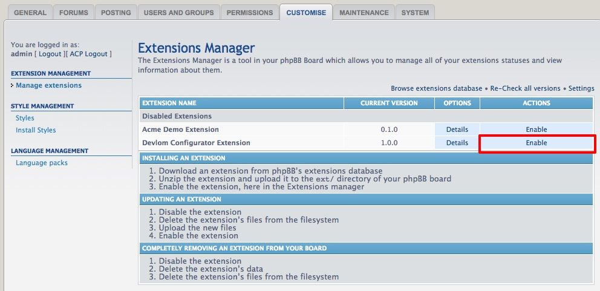

First, you will need to unpackage Devlom Configurator extension on your computer. Devlom Configurator is zipped into one ThemeForest package which contains following files and directories:
Documentation/
devlom.zip
solace.zipDevlom Configurator extension is inside devlom.zip.
In Windows, to unzip the extension, simply double click devlom.zip from the Windows Explorer view (for instance, if you downloaded the extension to My Documents, you would open My Documents and double click the file). Proceed to click "Extract all files" under the address bar (Windows Vista, 7 and 8) or under the Folder Tasks menu (Windows XP) from within the Explorer window and follow the prompts.
On Mac, zipped files are automatically unzipped upon download by Safari (this setting can be disabled by unticking "Open safe files" in Safari's preferences) and can be accessed through the downloads list.
Make sure that your devlom extension includes all the required files as described below:

To upload extension files, open your favourite FTP client (such as FileZilla, CuteFTP, SmartFTP, etc - even some internet web browsers have this capability) and log in to your account. Generally your publicly accessible files will be in an area named "public_html" or similar. Navigate to your board folder. You would need to navigate to the "ext/" directory once you are in your board folder.
Drag the folder "devlom/configurator" to the "ext" folder in your FTP client. Normally there will be a small folder icon within the FTP client (this may vary from client to client) followed by the name of the directory - this is where you should be dragging the file to. If there is already an "devlom" folder inside your "ext" folder, then just copy the "configurator" folder to "ext/devlom/".
After whole operation. Folder structure inside "ext" directory should look like this:
Once the Devlom Configurator extension has been uploaded, navigate in the board's Administration Control Panel to Customise -> Manage extensions. You should see your recently uploaded extension listed under "Disabled Extensions". Simply click its "Enable" button and installation is complete!

Updating an Devlom Configurator extension is a simple process that can be completed in a few simple steps with minimal disruption to your board. The following steps assume you have already downloaded and un-zipped a new version of an existing extension running on your board.
Disabling an Devlom Configurator extension will effectively turn it off, removing it from your board. Remember that disabling extension will revert your style to default settings. All saved style values won't be loaded.
Using your FTP program delete the Devlom Configurator files from the filesystem. Just delete "devlom/configurator" folder inside "ext" directory.
Using your FTP program upload the new Devlom Configurator extension files to the correct location.
Once the extension has been uploaded, navigate in the board's ACP to Customise -> Manage extensions. You should see your recently uploaded extension listed under "Disabled Extensions". Simply click its "Enable" button and the update is complete!
Once the extension has been installed, purge the cache in phpBB "General" tab.